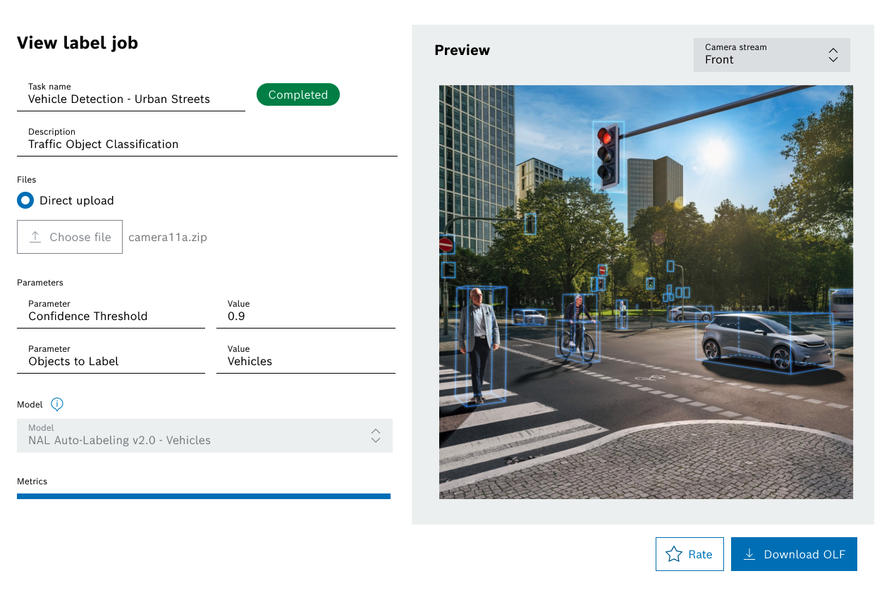

Autonomous Systems · B2B SaaS · AI Workflows UX
Overview
Autonomous driving systems depend on large volumes of accurately labeled sensor data. But preparing labeling jobs across camera, lidar, and radar inputs can be complex, technical, and operationally slow.
The challenge was not only annotation itself. It was designing a clear end-to-end workflow that helped users move quickly from access setup to job submission, then confidently review results.
The challenge was not only annotation itself. It was designing a clear end-to-end workflow that helped users move quickly from access setup to job submission, then confidently review results.
My Role
UX Designer responsible for workflow design, onboarding experience, guided job creation flows, results review interfaces, and usability improvements in collaboration with product and engineering teams.
Problem Context
Users needed to complete three critical stages before value could be realised:
The product needed to support speed, clarity, and operational confidence across technical workflows.
- Gain access to the platform
- Create and submit labeling jobs correctly
- Review outputs and decide next actions
The product needed to support speed, clarity, and operational confidence across technical workflows.
What I Solved
I designed the core user journey across onboarding, job creation, and results review, making a complex labeling platform easier to adopt and operate.
- Frictionless Onboarding
Created an invitation-based onboarding flow that moved users from account setup to first job submission with minimal friction while maintaining correct access controls. - Guided Job Creation
Designed a step-by-step submission flow for uploading sensor data, configuring annotation parameters, and defining outputs. Reduced errors by making constraints visible early. - Results Review Designed a results interface prioritising job status and labeled outputs such as 3D bounding boxes, helping users validate quality and take next steps quickly.

Outcome
- Improved usability across key operational stages: access, submission, and review.
- Demonstrated how workflow design can increase efficiency in AI data operations.
What This Demonstrates
- Workflow UX for technical enterprise platforms
- Simplifying complex multi-step tasks
- Designing for AI operations and data pipelines
- Faster onboarding and time-to-value
- Clear handoff design across operational stages
- Usability for expert and semi-technical users
💭 Reflection
Many complex platforms focus on powerful backend capabilities while underestimating the user journey around them.In practice, adoption depends on how easily users can get in, complete critical tasks, and trust the results.
Designing the workflow around those moments often creates as much impact as the core technology itself.